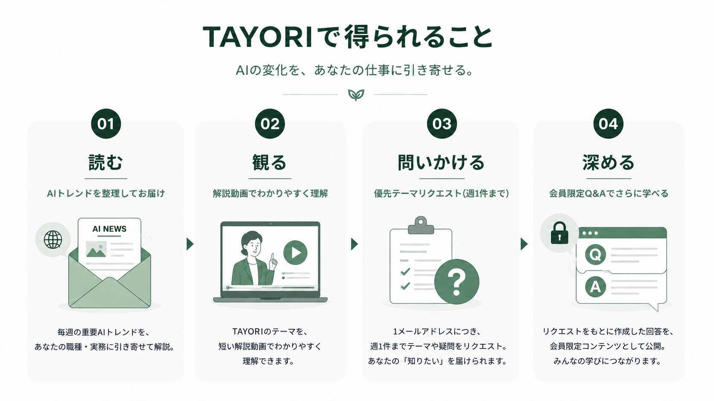

LATEST ISSUE
最新号
最新資料を読み込んでいます
今週の重要なAIトピックを、仕事に使える形で整理しています。
TOTONOE TAYORI
会員状態と最新資料を確認しています。
このページは有効なTAYORI会員のみ利用できます。
最新号
今週の重要なAIトピックを、仕事に使える形で整理しています。
MEMBER BENEFITS

タップして大きく表示PRIORITY QUESTION
状況や試したことを順番に整理して、回答動画につながる具体的な質問を送れます。類似する質問はまとめて扱い、TAYORI会員みんなで学べる内容として回答します。
今週分の質問を確認しています。
ANSWER VIDEOS
似た質問をテーマごとにまとめ、TAYORI会員全員に向けて解説します。質問者だけが見る個別回答ではありません。
類似質問をまとめた回答動画が公開されると、TAYORI会員全員がここから確認できます。
BACK NUMBERS
入会時期にかかわらず、これまでの資料を確認できます。
条件に合う資料がありません。